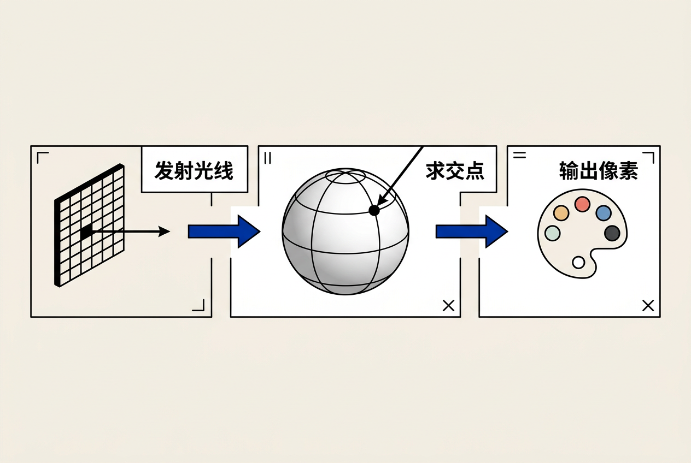
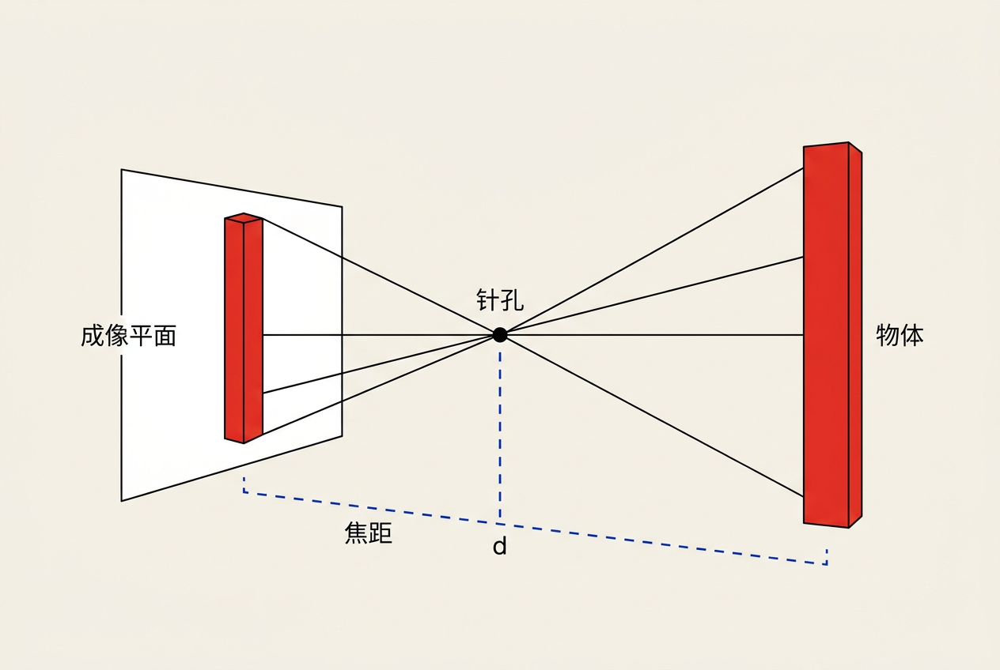
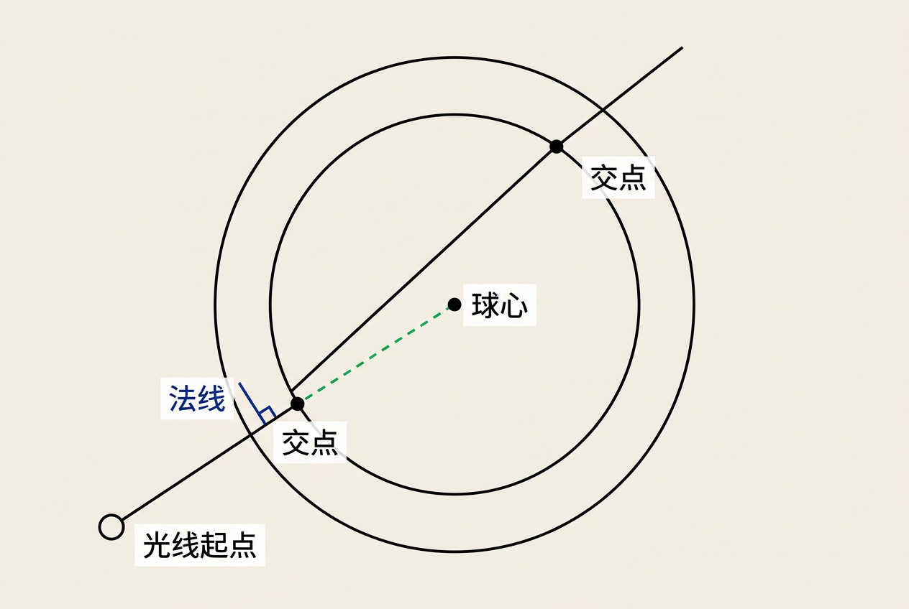
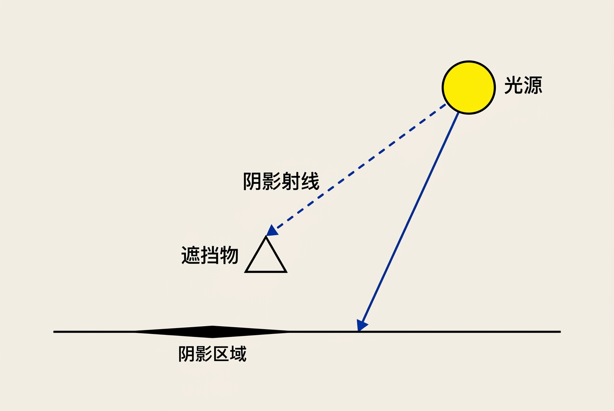
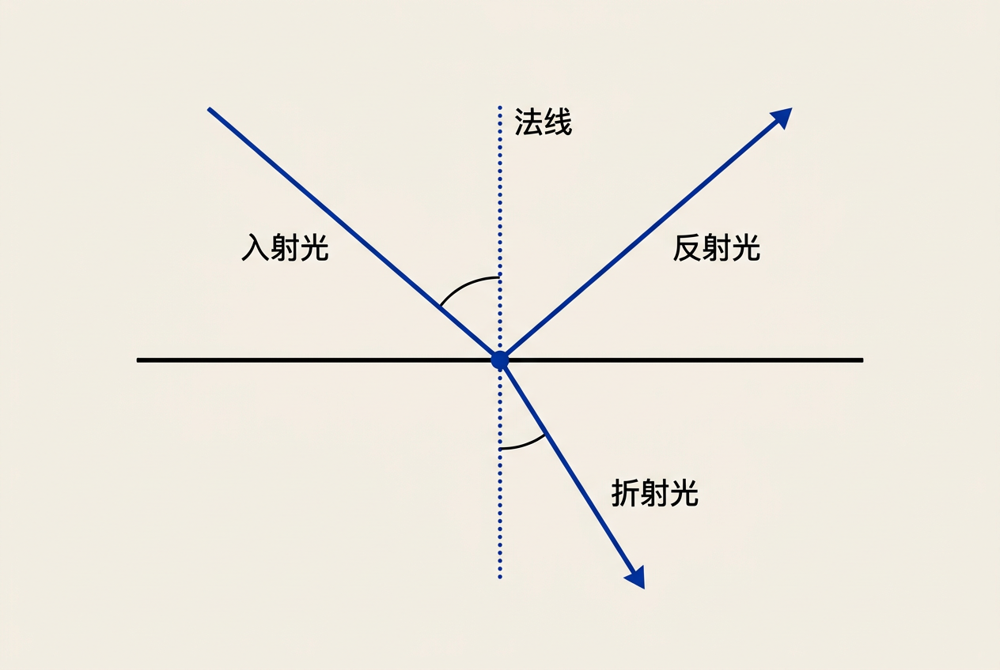
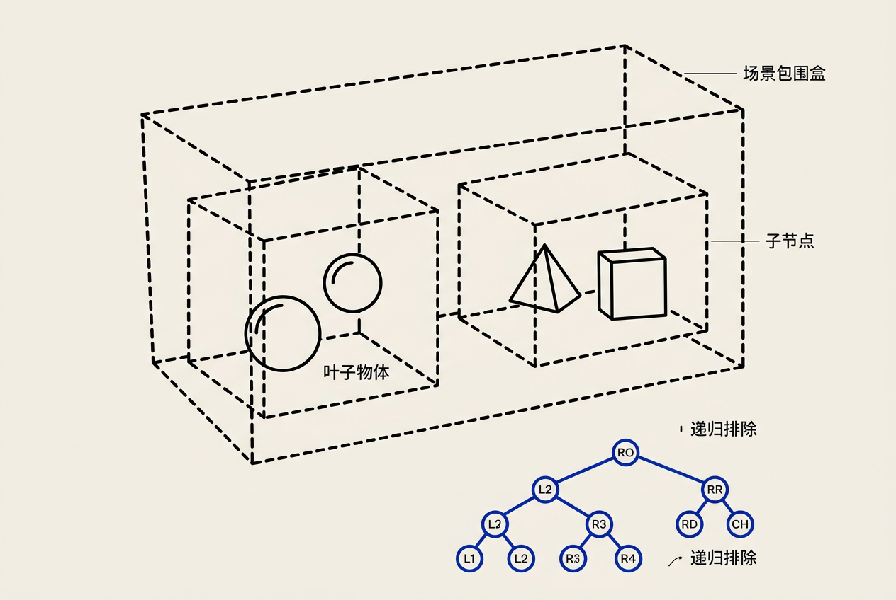

第4章：光线追踪 — 零基础讲义
讲义说明
本讲义基于 Steve Marschner & Peter Shirley 所著《虎书5》第5版第4章（p.79-96）。
光线追踪是生成照片级真实感图像的基础——从摄像机发射光线，追踪它们与场景中物体的交互。
本章是全书的"灵魂章节"，理解光线追踪就等于理解了计算机图形学的一半。
本版插画采用 Guizang 材质插画风格重新绘制。
学习目标
- 理解光线追踪的基本算法流程
- 掌握透视投影的几何原理
- 学会计算从摄像机出发的光线
- 掌握光线与球体求交的完整代数推导
- 掌握Möller-Trumbore三角形求交算法
- 理解反射、折射的几何推导
- 掌握Russian Roulette概率终止策略
- 理解BVH加速结构的原理
4.1 基本光线追踪算法
4.1.1 核心思想
光线追踪 = 模拟光线在场景中的传播路径
基本流程出奇地简单——只有三步：

生活类比：你站在一个黑暗的房间里，透过一个小孔看外面的世界。每根从你眼睛出发的"视线"都打到物体上，告诉你那个方向是什么颜色——这就是光线追踪的直观理解。
4.1.2 为什么光线追踪这么重要？
因为核心逻辑只有三步：发射→求交→着色。几乎所有视觉效果（反射、折射、阴影）都是在这个框架上加"递归"实现的。这个框架的简洁性就是它的力量。
function ray_trace(ray, scene, depth):
hit = scene.intersect(ray)
if no hit:
return background_color
// 第一步：局部着色
color = local_shading(hit, scene.lights)
// 第二步：递归追踪
if depth < max_depth:
// 如果是反射表面
if hit.material.reflective:
refl_ray = reflect(ray, hit.normal, hit.point)
color += hit.material.ks * ray_trace(refl_ray, scene, depth + 1)
// 如果是透明表面
if hit.material.transparent:
refr_ray = refract(ray, hit.normal, hit.point, hit.material.ior)
color += hit.material.kt * ray_trace(refr_ray, scene, depth + 1)
return color4.2 透视投影的几何基础
4.2.1 针孔相机模型
最简模型：一个点（相机位置）+ 一个平面（成像平面）。

光线从相机位置出发，穿过成像平面上的对应点。越远的物体看起来越小——这就是透视效果。
关键理解：透视的本质是"把3D视线方向映射到2D像素坐标"。这是全部渲染的第一步。
4.2.2 相机坐标系
定义相机需要三个向量和一个点：
e = 相机位置 (eye point)
g = 视线方向 (gaze direction)
v_up = 向上向量 (view up vector)
// 右手坐标系
w = -g / ||g|| // z轴（指向场景内部）
u = (v_up × w) / ||v_up × w|| // x轴（向右）
v = w × u // y轴（向上）| 符号 | 名称 | 含义 |
|---|---|---|
| e | 眼睛位置 | 相机在世界坐标系中的位置点 |
| g | 视线方向 | 从相机指向场景的方向向量 |
| v_up | 向上方向 | 指示相机"头顶"的方向 |
| u | 右方向 | 相机坐标系的x基向量 |
| v | 上方向 | 相机坐标系的y基向量 |
| w | 前方向（负z） | 相机坐标系的z基向量 |
4.2.3 视平面参数
视平面（image plane）定义在相机坐标系的 -d 处（沿w轴负方向）：
视平面（在z=-d处）
┌─────────────┐
│ t │ t = 上边界 (top)
│ │ │
│───┼───── r │ r = 右边界 (right)
│ │ │
│ b │ b = 下边界 (bottom)
└─────────────┘
l = 左边界 (left)
d = 视平面到相机的距离（焦距的模拟）
nx = 图像宽度（像素数）
ny = 图像高度（像素数）4.3 光线生成
4.3.1 光线参数方程
光线用参数方程表示：
| 符号 | 含义 |
|---|---|
| o | 光线原点（即相机位置 e） |
| d | 光线方向（单位向量，或至少归一化） |
| t | 沿光线的距离参数 |
| p(t) | 光线在距离t处的点 |
t 的含义非常直观：t=0 时在相机位置，t=1 时沿方向d走了1个单位距离，t 越大走得越远。
4.3.2 像素坐标到视平面的映射（核心公式）
给定像素坐标 (i, j)，其中 i 是水平方向（0 到 nx-1），j 是垂直方向（0 到 ny-1）：
这个公式到底在做什么？逐项拆解：
| 项 | 含义 | 解释 |
|---|---|---|
(r - l) | 视平面的总宽度 | 右边界减左边界 = 视平面的水平范围 |
(i + 0.5) | 像素中心的偏移 | i是像素序号（从0开始），+0.5取像素中心 |
(i + 0.5) / nx | 像素中心的相对位置 | 0~1之间的比值，表示该像素在总宽度中的位置比例 |
l + (r - l) × 比例 | 映射到视平面坐标 | 从左边界的偏移量 |
u | 最终视平面x坐标 | 该像素中心在视平面上的x位置 |
为什么用 i + 0.5 而不是 i？
因为像素是一个区域，而不是一个点。每个像素的范围是从 i 到 i+1，像素中心就在 i+0.5 处。用像素中心采样是最自然的选择。
像素 (i, j) 在图像中：
┌───────────┬───────────┬───────────┐
│ (0,0) │ (1,0) │ (2,0) │
│ · │ · │ · │ · = 像素中心
├───────────┼───────────┼───────────┤ (i+0.5, j+0.5)
│ (0,1) │ (1,1) │ (2,1) │
│ · │ · │ · │
├───────────┼───────────┼───────────┤
│ (0,2) │ (1,2) │ (2,2) │
│ · │ · │ · │
└───────────┴───────────┴───────────┘图像会整体向左偏移半个像素，相当于"采样点"在像素的左上角而不是中心。极端情况下，图像边缘的像素可能只采样到一半区域，产生偏差。
4.3.3 从视平面到光线方向
有了 (u, v) 坐标后，在相机坐标系中计算光线方向：
// 在相机坐标系中的方向
ray_dir_cam = u·u + v·v - d·w
// 变换到世界坐标系
ray_dir_world = camera_to_world × ray_dir_cam
ray_dir_world = normalize(ray_dir_world)
// 最终光线
ray = Ray(origin = camera_pos, direction = ray_dir_world)为什么是 -d·w？
视平面在相机坐标系中位于 z = -d 处（负z方向），所以视平面上的点的z坐标就是 -d。方向向量从相机原点指向视平面上的点，所以方向向量 = (u, v, -d) 在相机坐标系中。
4.3.4 特殊情况：正交投影
正交投影没有透视效果——所有光线方向相同：
// 所有光线方向都相同，平行于 -w
ray_dir = -w（对所有像素都一样）
// 起点偏移到不同像素位置
origin = camera_pos + u·u_vec + v·v_vec透视 = 从一点发出不同方向的光线（看远处物体变小）。正交 = 所有光线平行（物体大小不随距离变化，用于工程制图）。
4.4 光线与物体求交
4.4.1 光线与球体求交（完整推导）
这是最基本也是最重要的求交计算。我们从头开始推导：

第一步：写出两个方程
光线方程（参数形式）：
p(t) = o + t·d, t ≥ 0
球体方程（隐式形式）：
||p - c||² = R²
其中 c 是球心，R 是半径，p 是球面上的点。第二步：代入
把光线方程代入球体方程：
||o + t·d - c||² = R²第三步：展开
定义向量 m = o - c（从球心指向光线原点）：
||m + t·d||² = R²
展开点积：
(m + t·d)·(m + t·d) = R²
(m·m) + 2t(m·d) + t²(d·d) = R²第四步：整理为标准二次方程
这就是标准的 At² + Bt + C = 0 形式：
A = d·d // 方向向量长度的平方
B = 2(m·d) // 2 × (从球心到光线原点的向量与方向的点积)
C = m·m - R² // 光线原点到球心距离的平方 - 半径平方| 系数 | 几何意义 |
|---|---|
| A | 光线方向长度的平方（通常 d 为单位向量时 A=1） |
| B | 与光线方向和球心相对位置有关 |
| C | 光线原点相对于球体的位置（负值表示原点在球内） |
第五步：求判别式
D = B² - 4AC
- D < 0：无实根 → 光线与球无交点
- D = 0：一个根 → 光线与球相切（只交于一点）
- D > 0：两个根 → 光线穿过球体（两个交点）第六步：求解t值
t₁ = (-B - sqrt(D)) / (2A)
t₂ = (-B + sqrt(D)) / (2A)
选择规则：选最小正的 t 值（即最早碰到的交点）。if D < 0: return NO_HIT
t1 = (-B - sqrt(D)) / (2A)
t2 = (-B + sqrt(D)) / (2A)
if t1 > 0: t_hit = t1
else if t2 > 0: t_hit = t2
else: return NO_HIT
// 交点位置
p_hit = o + t_hit·d
// 法线方向（单位向量）
n = (p_hit - c) / R此时 C < 0，但判别式 D = B² - 4AC > 0（因为 A>0, C<0 所以 -4AC > 0），所以有两个实根。t₁ 是负数（因为从球内发出的光线，"向后"碰到的球面），t₂ 是正数（向前碰到的球面）。这可以用于渲染半透明材质或参与介质。
完整的球体求交函数：
function intersect_sphere(ray, sphere):
// 从球心到光线原点的向量
m = ray.o - sphere.center
R = sphere.radius
// A系数
A = dot(ray.d, ray.d)
// B系数（注意2被提出到判别式中）
B = 2 * dot(m, ray.d)
// C系数
C = dot(m, m) - R * R
// 判别式
D = B * B - 4 * A * C
if D < 0:
return NO_HIT
sqrt_D = sqrt(D)
t1 = (-B - sqrt_D) / (2 * A)
t2 = (-B + sqrt_D) / (2 * A)
// 选择最小的正t
if t1 > 1e-6:
return make_hit(t1, ray.o + t1 * ray.d)
if t2 > 1e-6:
return make_hit(t2, ray.o + t2 * ray.d)
return NO_HIT4.4.2 光线与三角形求交（Möller-Trumbore算法）
Möller-Trumbore算法是计算机图形学中使用最广泛的光线-三角形求交算法。它的优势在于不需要预先计算平面方程，只需要三角形的三个顶点和光线参数即可求解。
第一步：重心坐标基础
三角形由三个顶点 a, b, c 定义。三角形内任意一点 p 可以用重心坐标（barycentric coordinates）表示：
// 重心坐标表示
p = α·a + β·b + γ·c其中三个系数满足 α + β + γ = 1，且三个数都非负时 p 在三角形内部。
等价写法：
p = a + β·(b - a) + γ·(c - a)
= (1 - β - γ)·a + β·b + γ·c| 符号 | 含义 | 约束 |
|---|---|---|
| α | 顶点a的权重 | α = 1 - β - γ |
| β | 顶点b的权重 | β ≥ 0 |
| γ | 顶点c的权重 | γ ≥ 0 |
| β + γ | 必须在 [0, 1] 之间 | β + γ ≤ 1 |
第二步：联立方程
光线方程：
p = o + t·d三角形方程：
p = a + β·(b - a) + γ·(c - a)联立得：
o + t·d = a + β·(b - a) + γ·(c - a)整理：
t·d + β·(a - b) + γ·(a - c) = a - o写成矩阵形式：
[-d, b-a, c-a] × [t, β, γ]^T = o - a也就是用三个向量组成一个3×3矩阵，求解三个未知数 t, β, γ。
第三步：Cramer法则求解
利用Cramer法则和向量混合积性质，可以高效求解：
e1 = b - a // 三角形边1
e2 = c - a // 三角形边2
s = o - a // 从顶点a到光线原点的向量
// 计算行列式
p_vec = cross(d, e2)
det = dot(e1, p_vec)
// 如果行列式接近0，光线平行于三角形
if |det| < ε: return NO_HIT
inv_det = 1 / det
// 计算β（代码中的u）
t_vec = s
u = dot(t_vec, p_vec) × inv_det
if u < 0 or u > 1: return NO_HIT // β不在[0,1]内
// 计算γ（代码中的v）
q_vec = cross(t_vec, e1)
v = dot(d, q_vec) × inv_det
if v < 0 or u + v > 1: return NO_HIT // γ<0 或 β+γ>1
// 计算t（交点距离）
t_hit = dot(e2, q_vec) × inv_det
if t_hit < 0: return NO_HIT
return make_hit(t_hit, u, v)第四步：逐行代码翻译
function ray_triangle_intersect(ray, a, b, c):
// === 第1步：计算三角形的两条边向量 ===
e1 = b - a
e2 = c - a
// === 第2步：计算p_vec = d × e2 ===
// 这是光线方向与三角形一条边的叉积
// 用于后续计算行列式和β
p_vec = cross(ray.d, e2)
// === 第3步：计算行列式 det = e1 · (d × e2) ===
// 这个行列式实际上就是 |d, e1, e2| 的标量三重积
// 它衡量的是由d, e1, e2三个向量构成的平行六面体的体积
det = dot(e1, p_vec)
// === 第4步：检查光线是否平行于三角形 ===
// 如果行列式接近0，说明d, e1, e2三个向量共面
// 即光线方向与三角形所在平面平行
if |det| < 1e-6:
return NO_HIT
inv_det = 1.0 / det
// === 第5步：计算β坐标 ===
// t_vec = o - a 是从顶点a到光线起点的向量
t_vec = ray.o - a
// u = (t_vec · (d × e2)) / det = β
// 这是重心坐标公式中顶点b的权重
u = dot(t_vec, p_vec) * inv_det
// β必须位于[0,1]范围内
if u < 0.0 or u > 1.0:
return NO_HIT
// === 第6步：计算γ坐标 ===
// q_vec = t_vec × e1 = (o - a) × (b - a)
q_vec = cross(t_vec, e1)
// v = (d · ((o - a) × e1)) / det = γ
// 这是重心坐标公式中顶点c的权重
v = dot(ray.d, q_vec) * inv_det
// γ必须≥0，且β+γ≤1（保证α=1-β-γ≥0）
if v < 0.0 or u + v > 1.0:
return NO_HIT
// === 第7步：计算交点距离t ===
// t = (e2 · ((o - a) × e1)) / det
t = dot(e2, q_vec) * inv_det
// t必须为正（光线在相机前方）
if t < 1e-6:
return NO_HIT
// === 第8步：命中！返回交点信息 ===
// 重心坐标：α = 1 - u - v, β = u, γ = v
// 法线可用重心坐标插值顶点法线
hit_point = ray.o + t * ray.d
barycentric = (1 - u - v, u, v)
return make_hit(t, hit_point, barycentric)表格总结Möller-Trumbore每一步的几何意义：
| 步骤 | 计算内容 | 几何意义 |
|---|---|---|
| 1 | e1, e2 | 三角形的两条边向量 |
| 2 | p_vec = d × e2 | 光线方向与e2张成的平面的法线 |
| 3 | det = e1·p_vec | 标量三重积，检测光线是否平行于三角形 |
| 4 | 检查det | 若|det|<ε，光线平行于三角形平面，无交点 |
| 5 | u = (o-a)·p_vec / det | 重心坐标β |
| 6 | v = d·((o-a)×e1) / det | 重心坐标γ |
| 7 | t = e2·((o-a)×e1) / det | 光线参数t，即交点到原点的距离 |
| 8 | 检查t > 0 | 确保交点在光线正方向上 |
传统方法需要先算平面方程（4次乘除法求交），再投影到2D判断点是否在三角形内（至少3次叉积）。M-T算法只用一次Cramer法则直接求出t, β, γ，避免了重复计算，且β和γ可直接用于纹理坐标插值，一举多得。
4.4.3 光线与平面求交（扩展）
平面隐式方程：
n·p = c其中 n 是法线，c 是常数（从原点到平面的有符号距离）。
代入光线 p = o + t·d：
n·(o + t·d) = c
n·o + t(n·d) = c
t = (c - n·o) / (n·d)| 符号 | 含义 |
|---|---|
| n | 平面的法线方向（单位向量） |
| c | 平面方程的常数项 |
| o | 光线原点 |
| d | 光线方向 |
注意：n·d = 0 时，光线与平面平行，无交点。
4.5 着色与阴影
4.5.1 局部光照
在光线击中点计算颜色，考虑：
- 光源位置和强度
- 表面法线
- 材质属性（漫反射、高光、镜面反射色）
这一部分在第5章中有完整详述，这里只做简要概述。
4.5.2 阴影测试
阴影 = 从击中点向光源发射"阴影光线"（shadow ray）

// 检查点 p 是否在阴影中
function test_shadow(hit_point, normal, light_pos, scene):
// 从击中点向光源方向发射光线
// 注意：加一个小偏移ε避免"自相交"
shadow_ray_dir = normalize(light_pos - hit_point)
shadow_ray = Ray(hit_point + ε·normal, shadow_ray_dir)
// 光源距离
light_dist = distance(hit_point, light_pos)
// 如果中间有物体挡住，就在阴影中
hit = scene.intersect(shadow_ray)
if hit and hit.t < light_dist:
return true // 被遮挡 → 阴影
return false关于 ε 偏移：
浮点运算有精度误差，交点 p 可能实际上位于表面的"内部"。如果不做偏移，从 p 出发的阴影光线可能重新与自己相交（自相交），造成奇怪的条纹/黑点。通常取 ε = 1e-4 到 1e-6。
4.6 递归光线追踪
4.6.1 反射光线的几何推导（三段式）
反射公式 r = d - 2(d·n)n 可以从几何角度分三步理解：

第一步：分解入射方向
入射方向 d 可以分解为平行于法线 n 的分量和垂直于法线 n 的分量：
d_parallel = (d·n)·n // 沿法线方向的分量
d_perp = d - (d·n)·n // 垂直于法线的分量 d
↘
│ d_perp
│
────┼────→ 表面（水平）
│
↑ d_parallel（指向表面内部）
n第二步：反射改变法线分量方向
反射时：
- 平行分量反转方向（因为反射"弹回"）
- 垂直分量方向不变（因为表面是平的）
r_parallel = -(d·n)·n // 法线分量反向
r_perp = d - (d·n)·n // 垂直分量不变第三步：合成反射方向
↙ r
/
│ r_perp（不变）
│
────┼────→ 表面（水平）
│
r_parallel ↑ 反向验证：
反射光线的性质：
r·n = -d·n（反射后法线分量方向相反）||r|| = ||d||（反射不改变长度）r_perp = d_perp（保持垂直分量不变）
// 验证 r·n = -d·n
r·n = (d - 2(d·n)·n)·n
= d·n - 2(d·n)·(n·n)
= d·n - 2(d·n)
= -d·n ✓完整的反射着色代码：
// 递归追踪反射
function trace_reflection(ray, hit, scene, depth):
if depth >= max_depth:
return Color(0, 0, 0)
// 计算反射方向
n = hit.normal
d = ray.direction
r = d - 2 * dot(d, n) * n
r = normalize(r)
// 发射反射光线（加ε偏移避免自相交）
refl_ray = Ray(hit.point + ε * n, r)
// 递归追踪
refl_color = trace(refl_ray, scene, depth + 1)
// 乘以反射系数
return hit.material.ks * refl_color4.6.2 折射（斯涅尔定律）
折射比反射复杂，因为光线进入不同介质时会发生偏折：
// Snell定律
η₁·sinθ₁ = η₂·sinθ₂
// 折射光线方向（完整公式）
t = (η₁/η₂)·(d - (d·n)·n) - n·sqrt(1 - (η₁/η₂)²·(1 - (d·n)²))| 符号 | 含义 |
|---|---|
| η₁ | 入射介质的折射率（空气 η≈1.0003 ≈ 1） |
| η₂ | 折射介质的折射率（水 η≈1.33，玻璃 η≈1.5） |
| θ₁ | 入射角（光线与法线夹角） |
| θ₂ | 折射角 |
| d | 入射方向 |
| n | 表面法线 |
| t | 折射方向 |
根号内为负时发生全反射（光不从介质中射出）。
4.6.3 终止策略：俄罗斯轮盘赌（Russian Roulette）
问题：递归光线追踪深度无限，但实际计算资源有限。简单地设最大深度（如5层）效率低——有些路径需要更多递归，有些不需要。
俄罗斯轮盘赌是一种无偏的随机终止策略，核心思想是：
每条光线以概率 q 终止，以概率 (1-q) 继续，但继续时颜色结果要除以 (1-q) 以保持期望值不变。
公式表达：
// 俄罗斯轮盘赌
P = survival_prob（生存概率，如 0.7）
if random() > P:
// 光线"死亡"——终止追踪
return Color(0, 0, 0)
else:
// 光线继续追踪，但颜色要除以P补偿
color = trace_recur(ray, scene, depth + 1)
return color / P为什么这保持了期望不变？
期望值计算：
数字例子：
假设到第5次反射时：
- 生存概率 P = 0.7
- 如果继续追踪，返回的颜色贡献为 (0.3, 0.5, 0.2)
- random() = 0.52（活着!） → 最终返回 (0.3/0.7, 0.5/0.7, 0.2/0.7) = (0.429, 0.714, 0.286)
第6次反射时：
- 生存概率 P = 0.7
- random() = 0.88（死了!）→ 返回 (0, 0, 0)，这条路径终止
长期来看，有70%的光线会继续，30%会终止，但蒙特卡洛期望值等于真实值。
结合最大深度的完整策略：
function trace(ray, scene, depth):
if depth > max_depth:
// 一定深度后使用俄罗斯轮盘赌
P = 0.7
if random() > P:
return Color(0, 0, 0)
else:
// 浅层递归直接继续
P = 1.0
hit = scene.intersect(ray)
if no hit:
return background_color
color = local_shading(hit)
// 反射
if hit.material.reflective:
refl_ray = make_reflection(ray, hit)
refl_color = trace(refl_ray, scene, depth + 1)
color += hit.material.ks * refl_color / P
return color普通截断会在固定深度处粗暴截断，造成"能量丢失"（看起来暗）。轮盘赌使终止变得平滑，能量损失为0（期望意义上），同时平均计算量可控。
4.7 加速结构
4.7.1 为什么要加速？
暴力测试所有三角形是不现实的：
100万三角形 × 1920×1080像素 × 每条光线测试所有三角形 = 2万亿次求交！
即使每次求交只要1纳秒，也需要2000秒（半小时以上）渲染一帧。解决方案：空间加速结构——快速排除不可能相交的区域。
4.7.2 包围盒层次结构（BVH）
生活类比：俄罗斯套娃（Matryoshka）
想象一套俄罗斯套娃——最小的娃娃放在稍大的娃娃里面，稍大的再放在更大的里面……你要找某个特定的娃娃时：
- 先打开最大的娃娃，里面有一堆中等的娃娃
- 你知道要找的娃娃在左边那个中等娃娃里，所以右边的不用管了
- 打开左边中等娃娃，里面有几个更小的
- 如此反复，直到找到你要的娃娃
BVH的工作原理完全一样：场景被组织成一棵树，每个节点是一个"娃娃"（包围盒），里面装着"更小的娃娃"（子节点）或"真正的娃娃"（三角形）。遍历时，如果光线没碰到大娃娃，它里面的所有小娃娃都不用检查。

BVH结构示意图：
场景（最大的套娃）
/ \
左半场景 右半场景
(中等娃娃) (中等娃娃)
/ \ / \
物体A 物体B 物体C 物体D
(小娃娃) (小娃娃) (小娃娃) (小娃娃)BVH节点数据结构：
struct BVHNode:
bbox: AABB // 包围盒（大娃娃的外壳）
left: BVHNode* // 左子节点
right: BVHNode* // 右子节点
triangles: List // 只有叶子节点有三角形
is_leaf: bool // 是否为叶子节点BVH遍历算法（递归版本）：
function intersect_bvh(node, ray):
// 第1步：如果光线没碰到当前节点的包围盒，直接返回
// 这就好比打开大娃娃发现连外壳都碰不到，根本不用继续拆
if not intersect_bbox(node.bbox, ray):
return NO_HIT
// 第2步：如果是叶子节点，测试所有三角形
if node.is_leaf:
closest = NO_HIT
for tri in node.triangles:
hit = intersect_triangle(tri, ray)
if hit and hit.t < closest.t:
closest = hit
return closest
// 第3步：如果是内部节点，递归测试子节点
// 注意：先测近的子节点，这样可以利用"近处裁剪"加速
hit_left = intersect_bvh(node.left, ray)
hit_right = intersect_bvh(node.right, ray)
// 返回最近的交点
return closer_of(hit_left, hit_right)BVH构建（SAH启发式划分）：
function build_bvh(triangles, depth):
// 计算所有三角形的包围盒
bbox = union_of_bboxes(triangles)
if triangles.count <= MAX_LEAF_SIZE or depth > MAX_DEPTH:
// 叶子节点：直接存三角形
return new BVHNode(is_leaf=true, triangles=triangles, bbox=bbox)
// 沿着最长的坐标轴划分
axis = longest_axis(bbox)
// 按轴排序三角形中心
sort_triangles_by_center(triangles, axis)
// 在中间位置划分
mid = triangles.count / 2
left_tris = triangles[0:mid]
right_tris = triangles[mid:]
// 递归构建
return new BVHNode(
is_leaf=false,
bbox=bbox,
left=build_bvh(left_tris, depth+1),
right=build_bvh(right_tris, depth+1)
)BVH vs. 其他加速结构：
| 加速结构 | 优点 | 缺点 |
|---|---|---|
| BVH | 构建简单，动态场景易更新 | 非均匀场景效率略低 |
| KD-Tree | 均匀场景最优 | 构建复杂，内存占用大 |
| 均匀网格 | 实现最简单，动态场景友好 | 内存占用大，"空单元格"浪费 |
| 八叉树 | 自适应空间划分 | 实现复杂，对光线追踪不如BVH常见 |
4.8 完整光线追踪器实现框架
把以上所有概念组装起来：
function render_scene():
// 准备场景
scene = load_scene("scene.obj")
bvh = build_bvh(scene.triangles) // 构建BVH加速结构
// 准备相机
camera = Camera(eye=vec3(0,0,5), gaze=vec3(0,0,-1), up=vec3(0,1,0))
// 渲染循环
for j in 0..height-1:
for i in 0..width-1:
// 生成光线
u = l + (r - l) * (i + 0.5) / width
v = b + (t - b) * (j + 0.5) / height
ray_dir = normalize(u * camera.u + v * camera.v - d * camera.w)
ray = Ray(camera.eye, ray_dir)
// 追踪光线（递归深度从0开始）
color = trace(ray, scene, bvh, depth=0)
// 设置像素颜色
image.set_pixel(i, j, color)
save_image(image, "output.png")
function trace(ray, scene, bvh, depth):
// 最大深度限制
if depth > MAX_DEPTH:
return Color(0, 0, 0)
// 使用BVH加速求交
hit = bvh.intersect(ray, scene)
if not hit:
return scene.background_color
// 漫反射+高光着色
color = simple_shade(hit, scene.lights)
// 反射递归
if hit.material.reflectivity > 0:
refl_dir = ray.direction - 2 * dot(ray.direction, hit.normal) * hit.normal
refl_ray = Ray(hit.point + 1e-4 * hit.normal, refl_dir)
refl_color = trace(refl_ray, scene, bvh, depth + 1)
color += hit.material.reflectivity * refl_color
// 阴影
for light in scene.lights:
shadow_dir = normalize(light.position - hit.point)
shadow_ray = Ray(hit.point + 1e-4 * hit.normal, shadow_dir)
if bvh.intersect(shadow_ray, scene) is not None:
color *= 0.3 // 阴影衰减
// 俄罗斯轮盘赌
if depth > 3:
p = 0.7
if random() > p:
color = Color(0, 0, 0)
else:
color = color / p
return color全章总结
核心洞察：光线追踪的核心思想极其简单——对每个像素发射一条光线，找到它碰到的第一个物体。但"简单"不意味着"不强大"：
| 步骤 | 核心操作 | 关键公式/算法 |
|---|---|---|
| 发射光线 | 从摄像机穿过像素中心 | u = l + (r-l)(i+0.5)/nx |
| 球体求交 | 求解二次方程 At²+Bt+C=0 | A=d·d, B=2m·d, C=m·m-R² |
| 三角形求交 | Möller-Trumbore算法 | Cramer法则求解t, β, γ |
| 反射 | 反射方向公式 | r = d - 2(d·n)n |
| 着色 | 计算表面颜色 | （详见第5章） |
| 加速 | BVH层次包围盒 | 俄罗斯套娃式递归排除 |
| 终止 | 俄罗斯轮盘赌 | 随机终止 + 期望补偿 |
一句话总结：光线追踪 = 对每个像素发射光线 → 求交 → 着色 → 递归反射/折射，用BVH加速，用俄罗斯轮盘赌优雅终止。